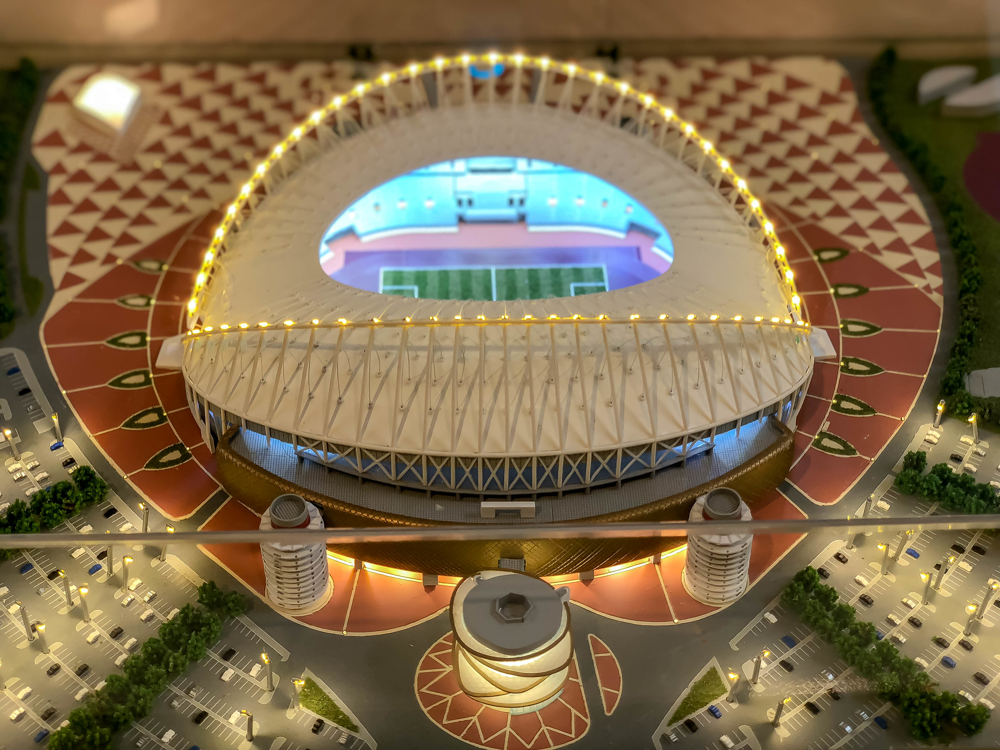
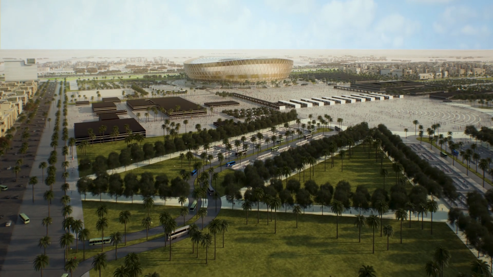
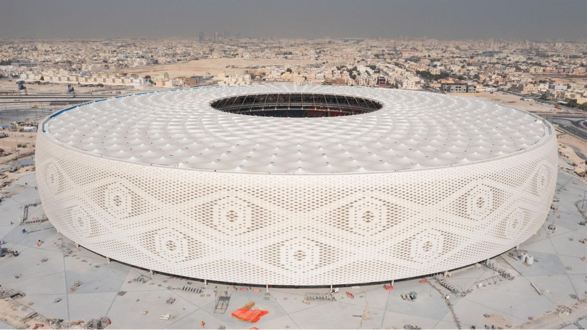

ESTÁDIOS DO CATAR 2022
Estádio Internacional Khalifa

Localizado no centro de todas as sedes do Mundial, foi o primeiro a ser entregue neste calendário Fifa. Inaugurado no ano de 1976 e agora palco dos jogos 2022.
Mesmo reformado, porém, o estádio tem uma arquitetura um pouco menos arrojada, mais puxada para o tradicional. Diferente dos outros palcos da Copa, o Khalifa não tem teto, nem mesmo retrátil, mas conta com sistema de refrigeração para ajudar a amenizar as altas temperaturas, prezando o conforto dos 50 mil torcedores que cabem no estádio.
Estádio Nacional de Lusail

Localizado na cidade homônima, foi um projeto apresentando em dezembro de 2018 pelo falecido arquiteto Albert Speer. A arquitetura do estádio, que tem fachada inspirada nas tigelas de tâmaras da época de ouro do artesanato islâmico, e iluminação feita para lembrar o fanar, uma lanterna local, conta com uma cobertura de painéis de energia solar (que vão alimentar o estádio e seus arredores) e acabamentos em prata, que impactaram muito no alto custo da construção, que ficou no valor de 2 bilhões de dólares.
O estádio, de grama natural e teto retrátil - que pode ser aberto ou fechado a depender do clima e das demandas dos eventos -, tem capacidade para 94.500 torcedores. Nas paredes estão fotos de 80 mil pessoas que participaram das obras e um mosaico, além de uma tecnologia que vai turbinar a experiência dos visitantes, que poderão tirar fotos com hologramas dos jogadores e fazer compras nos shoppings virtuais.
Estádio Al Bayt

Um dos estádios que mais representa a tradicionalidade qatari é o Al Bayt, localizado na cidade de Jor. Com capacidade para 60 mil torcedores, foi projetado pelo arquiteto alemão Albert Speer Jr., que se inspirou nas tendas beduínas - uma cabana usada por nômades árabes para para se estabelecer e sobreviver ao deserto -, para desenhar a fachada da arena.
Mas, apesar da aparência simples de uma tenda, o estádio, assim como os outro sete que vão receber jogos da Copa, é extremamente tecnológico. Além disso, possui um hotel em suas instalações, no qual os quartos tem vista direta para o campo, que é feito de grama natural.
Estádio Al Thumama

Situado em Doha, capital do Qatar, é um dos estádios mais modernos da atualidade. Este é o único dos oito palcos da Copa do Mundo que foi projetado por um arquiteto local, Ibrahim M. Jaidah, que se inspirou no gahfiya, um tradicional gorro de malha usado por homens qataris, para o design exterior da arena.
Durante a Copa do Mundo, o Al Thumama terá capacidade para 40 mil pessoas, mas isso cairá na metade após o Mundial, de forma a atender melhor às necessidades e funcionar como uma infraestrutura esportiva de qualidade para os locais. Ao final da competição, o estádio será também um centro comunitário, que contará com multiplas instalações desportivas.